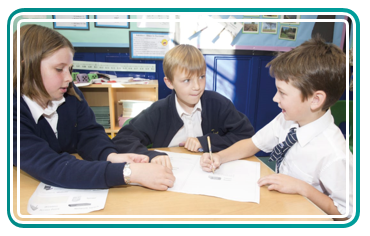

Williams, L. A. and Kessler, R. R., All I Really Need to Know
About Pair Programming I Learned in Kindergarten, pp.108?114
(Communications of the ACM, 43(5) 2000).
See, for example, www.khanacademy.org/cs/programming, www.codeavengers.com/#learner or www.tryhaskell.org
Although developed for the previous curriculum LGfL's ICT Assessment resource Classroom section features useful advice from teachers on opportunities to use AfL techniques during learning. The resource also features an excellent presentation focusing on good assessment questioning.
See LGfL Blog Central for a 'Why?' and 'How?' guide to blogging with your class.
Assessment
Formative assessment
There are certainly some challenges to assessing Computing.
- It’s hard for teachers to judge pupils’ knowledge and understanding based on the outcomes of practical tasks alone.
- If pupils work collaboratively, it can be hard to identify each individual’s contribution.
- If the teaching of Computing is embedded in other subjects, it’s often difficult to separate attainment in Computing from that in the host subject.
Despite these challenges, the assessment for learning (AfL) techniques that you’re familiar with in other subjects still apply. Let’s look at some of the AfL approaches and consider how they can be applied to Computing.
- Self-assessment: The curriculum expects pupils to debug their own programs, use logical reasoning to explain simple algorithms (including their own), and detect and correct errors in both algorithms and programs. One way to encourage self-assessment is for pupils to maintain a blog or video log of their work in Computing, incorporating a reflective commentary alongside examples of what they’ve done.
- Peer-assessment: The ideas for self-assessment suggested above translate naturally into peer-assessment, with pupils working with a partner to review, and help correct, algorithms and programs, or providing critical, constructive feedback on digital content. Methods used by professional software developers, such as programming in pairs28 and reviewing code, translate easily into the classroom. Online feedback and discussion, whether in the Scratch community or on pupils’ blogs, also facilitate peer-based assessment.
- Open questioning: Pupils’ knowledge of the concepts covered by the programme of study may not be immediately apparent in the work they produce. The use of open questioning is one way in which you can both assess and develop their grasp of concepts.‘Why’ and ‘how’ questions work well: Why did Google place that result at the top? How does your program work? Why might that not be a safe website?, etc.
- Discussion with peers: Encouraging pupils to use similar open questions can be effective in allowing them to focus on what they’ve learned, rather than only on what they’ve done. Moving some of this discussion online, and perhaps involving pupils in other schools or countries, would be one powerful way to illustrate the opportunities offered by computer networks for communication and collaboration.
- Target setting: Project management skills such as planning, organising, motivating others and allocating resources, are of great importance in real-world projects, and they can be widely applied in education. The ‘decomposition’ aspect of computational thinking, in which large problems are broken down into small tasks, is a necessary part of managing all but the smallest of projects.
- KWL: Using lists to identify what pupils already know, what they want to learn and subsequently what they have learned is a useful technique that can be used to support independent learning in Computing. In particular, this can be applied to the logical reasoning needed to explain algorithms and to detect and correct errors, with pupils first establishing a firm foundation, before exploring alternatives and subsequently reviewing what they have learned, rather than only what they have done.
- Blogs: There are now many examples of English primary pupils routinely recording and sharing their learning with a global audience through the use of class blogs. Individual pupil blogs can be a powerful tool to encourage self- and peer-assessment, track progress, give feedback, collate evidence, and share work with parents. It’s now unnecessary to print off work from Computing lessons when work can be attached to a reflective commentary on a pupil’s blog, or saved to an area of the network or learning platform.

- Automatic feedback: A number of sites offer interactive tutorials in programming languages, providing immediate feedback on the success or failure of code in response to simple challenge questions. While few of these sites are aimed at primary school pupils, they may be of use for gifted or talented pupils eager to learn more programming independently.29
